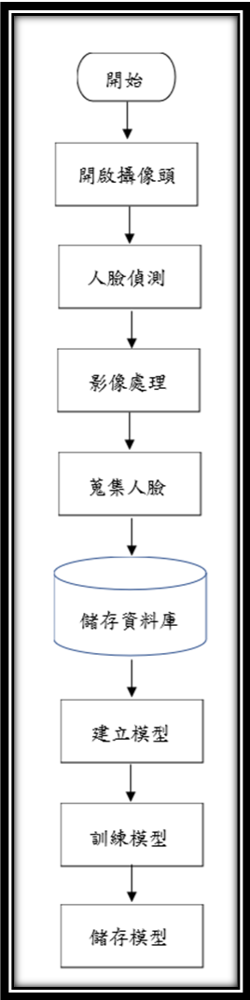

組員:王騰緯、陳柏榮、邱奕融、許家豪
指導老師:李志仁教授 組別:B01
隨著科技的進步，除了在手機上能看到已經使用人臉辨識技術外，門禁系統也漸漸加入人臉辨識，加快進門速度，拿一張臉就可以進入家門或公司門口等等，這樣就不必擔心鑰匙要找、忘了帶或者不見的問題，另一方面，在安全性上，鑰匙被拿到隨便都能被複製，但人臉並沒有這麼簡單的，最終的目地，就是為了生活上更方便快速及安全。
系統整體架構如圖1所呈現，總共分成兩大部分：訓練人臉與人臉辨識
第一部分:訓練人臉
首先，把四個人臉資料放進電腦中，開啟視訊攝像頭，使用OpenCV並結合Dlib函式庫，利用人臉特徵點偵測，如偵測到人臉後，儲存全景照片各1000張，除此之外，再把2000張亞洲隨機人臉資料(男、女各1000)當作第五人，來解決陌生人問題。
圖3 人臉特徵68點實際偵測
完成後，進行影像處理讓訓練變得更好，把照片先擺正，去除背景並切至剩臉的部分，在此很明顯的看出，把不重要的許多干擾資料刪除，留下各個人臉的特徵有很大的幫助。
圖6 影像處理
接著是訓練部分，下載這些切好的人臉資料當作train data，其中分20%給test data，做完後接續創建模型CNN，經過卷積層、池化層、全鏈結層和輸出後，顯示權重，訓練、混淆矩陣與訓練完成率損失率各圖。